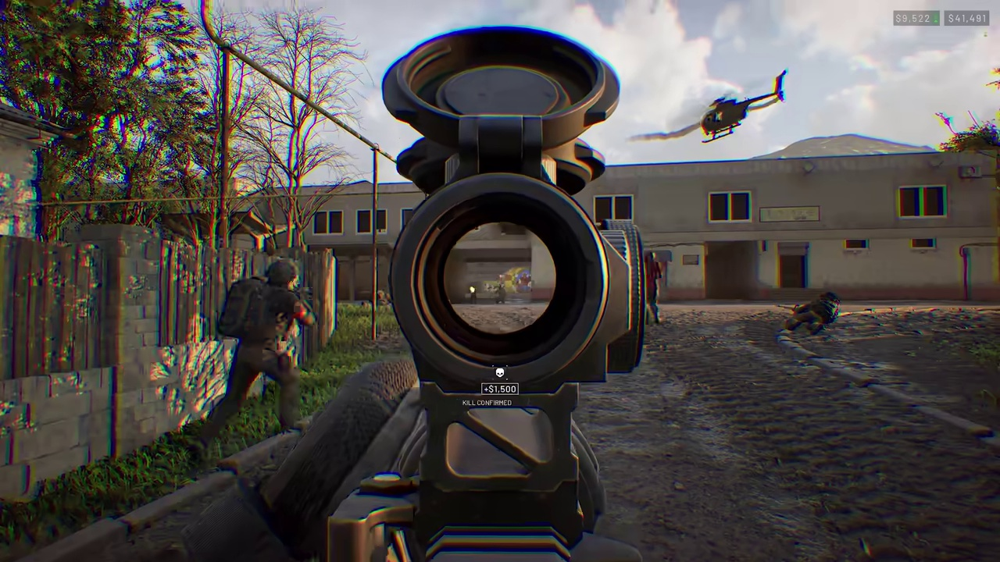

Knowledge Sectors
Guides & Walkthroughs
1 verified tactical guides & database archives.
Technical & Optimization
3 verified tactical guides & database archives.
Live Stats & Roadmap
1 verified tactical guides & database archives.
Platforms & Purchase
1 verified tactical guides & database archives.
Latest Directives & Database Entries (6 Guides)
 🎬 Official Trailer: 100-Player Three-Faction Warfare
🎬 Official Trailer: 100-Player Three-Faction Warfare
WARDOGS Best Settings, FPS Boost & Performance Optimization Guide
Optimal graphics settings, stutter fixes, Lossless Scaling, and max FPS presets.
 🎬 Official Trailer: 100-Player Three-Faction Warfare
🎬 Official Trailer: 100-Player Three-Faction Warfare
WARDOGS System Requirements: Can My PC Run It (Minimum vs Recommended Specs)
Official hardware requirements, GPU/CPU benchmarks, RAM, and SSD storage requirements.
 🎬 Official Trailer: 100-Player Three-Faction Warfare
🎬 Official Trailer: 100-Player Three-Faction Warfare
WARDOGS Server Status, Connection Issues & Port Forwarding Guide
Server downtime, matchmaker errors, port forwarding, and network ping stabilization.

🎬 Official Trailer: 100-Player Three-Faction WarfareWARDOGS Beginner Survival Tips & Crucial Rules Before You Play
Essential beginner survival rules, inventory management, extraction, and avoiding death.
 🎬 Official Trailer: 100-Player Three-Faction Warfare
🎬 Official Trailer: 100-Player Three-Faction Warfare
WARDOGS Release Date, Patch Notes & Official Development Roadmap
Early access roadmap, upcoming content patches, DLC schedules, and release timelines.
 🎬 Official Trailer: 100-Player Three-Faction Warfare
🎬 Official Trailer: 100-Player Three-Faction Warfare
WARDOGS Crossplay, Cross-Progression & Platform Support (PC, PS5, Xbox)
Console availability (PS5, Xbox Series X/S), Steam Deck verified status, and crossplay matchmaking.